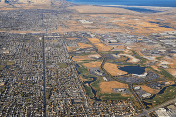

Fort Herriman

Fort Herriman FunFact: Herriman was established in 1851 by Henry Harriman, Thomas Jefferson Butterfield, John Jay Stocking, and Robert Cowan Petty. A fort was established where the community garden is today. The only remnants of Fort Herriman are the two black locust trees that stand where the entrance to the fort once was
Herriman Utah Church

In Herriman's earleist days, chruch congregations were building around Herriman. Religion was importnant to early settlers in Herriman, and religion is pretty active to this day.
Even in present day The Church of Jesus Christ of Latter Day Saints has a lot of chruch meetinghouses across Herriman.
FunFact: There are approximately 26 LDS meetinghouses in Herriman Utah.

FunFact: This old house in Herriman Utah was one of the homes of the first settlers in Herriman Utah.
Not much is known about the lost-house in Herriman Utah, but more data will be added once research has been conducted.
Farm in early days of Herriman
.png)
FunFact: This was a farm in the early settler days of Herriman Utah.
Herriman Utah in the early days used to be a lot of farm land, local farmers would sell their crops to make money in the early days of Herriman.
Herriman Utah Modern day
 Modern day Herriman is continuing to grow each day. There are several businesses in and around Herriman, as well as local parks and attractions.
FunFact: Our city population is 61,816 in 2022. In 2021 our population was 58,198. Within the year gap we have seen an increase of 3,618 new residents move to Herriman!